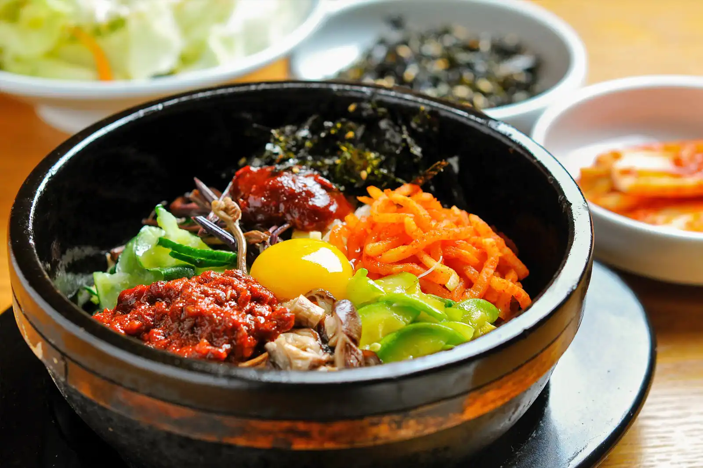

bimbipap

Description
Bibimbap is a traditional Korean dish that translates to "mixed rice." It is a colorful, nutritious, and visually appealing meal that is enjoyed both in Korea and internationally. Here are some key aspects of bibimbap
Ingredients
- Rice: The base of bibimbap is typically steamed white rice, though variations can include brown rice or other grains.
- Vegetables: A variety of sautéed and seasoned vegetables are used, which may include julienned carrots, spinach, bean sprouts, mushrooms, zucchini, and bellflower root. The vegetables are often cooked separately to maintain their distinct flavors.
- Protein: Common proteins include sliced beef (such as bulgogi), chicken, tofu, or a fried egg (often sunny-side up) placed on top.
- Gochujang:A rich, savory, and spicy red chili paste that adds depth and heat to the dish. It is usually served on the side or drizzled over the top.
- Sesame Oil:A few drops of sesame oil are often added for extra flavor and aroma.
- Garnishes:Sesame seeds and finely sliced nori (seaweed) are common garnishes.
Steps
- 2 cups cooked white or brown rice
- 1 cup julienned carrots
- 1 cup spinach
- 1 cup bean sprouts
- 1 cup sliced mushrooms (shiitake or button)
- 1 zucchini, julienned
- 1 cup sliced bellflower root (doraji) (optional)
- 200 grams beef (or tofu for a vegetarian option), thinly sliced
- 2 eggs
- 2 tablespoons gochujang (Korean red chili paste)
- 1 tablespoon sesame oil
- 1 tablespoon soy sauce
- 1 clove garlic, minced
- Salt and pepper to taste
- Sesame seeds and sliced nori (seaweed) for garnish